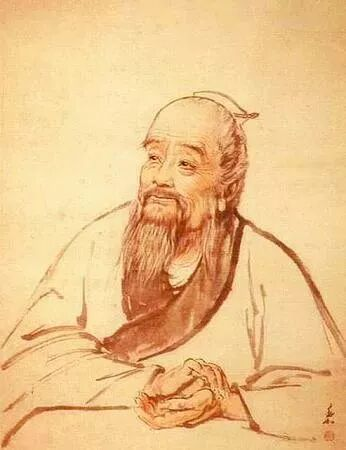
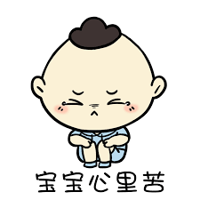

（本文主要来自UCLA 家庭与夫妇心理学第15节课的内容）

扁鹊曰：‘长兄于病视神，未有形而除之，故名不出于家。中兄治病，其在毫毛，故名不出于闾。若扁鹊者，镵血脉，投毒药，副肌肤，闲而名出闻于诸侯。’
夫妻之间的主要问题
夫妻之间总是或多或少会有很多摩擦和矛盾，根据调查研究，在美国，心理咨询中人数最多的就是有关夫妻关系的心理咨询。
尽管夫妻心理咨询已经如此普遍，心理咨询师们还是发现，一般当他们接触到这些来咨询的家庭的时候，夫妻之间的问题往往已经非常严重，且常常已经持续了数年之久。
在下面这张表中，列出了在心理咨询师的心目中的十大夫妻之间的常见问题，问题出现的概率，以及相对来说解决问题的难度。
问题类别 出现的概率 治疗难度
沟通不当 87% 高
家庭内的权利争夺 62% 高
不现实的期待 50% 高
性爱 47% 低
生活中出现的问题 47% 低
表达爱意上有障碍 45% 低
经济问题 43% 低
对另一半缺乏爱意 40% 高
子女问题 38% 低
严重的个人问题 38% 高
可以看到，越是频繁出现的问题，往往治疗的难度也越高，可见夫妻关系治疗之棘手。
三种主要的夫妻关系治疗流派
夫妻关系治疗始于20世纪60年代。随着人们离婚率的提高，越来越多的人开始寻求这方面的帮助，从而催生出这个产业，同时也引起了学术界的研究兴趣。
慢慢地，夫妻关系治疗中分化出了三种主要的流派，下面就为大家做具体分析。
心理分析模型流派
这个流派认为，每个人的行为都被自婴儿时期形成的，无意识的动机所驱动。这些动机在人们成年以后依然控制着他们如何对待亲密关系。
这么说可能有些抽象。比如说，这个流派认为，很多时候你对你老婆发的火，并不是真的因为你对你老婆生气，而实际上是因为把你跟母亲的问题投射到你的妻子身上了。
而这个流派的治疗手段，就是去改变这些无意识的动机。他们通常会在治疗的时候跟你一起探索一下你自己到底是谁，帮你发现你的真正的个人问题。一旦你发现了你的真正的个人问题，你就可以把这些问题从你跟伴侣的沟通中分离开来，从而改善这些沟通。
这个流派中还有一个分支流派，叫内部导向夫妻治疗。这种治疗在探索完夫妻双方到底是怎样的独特的个体以后，会基于这样的了解来进一步改善双方的沟通。
比如说，如果夫妻中，妻子确实从小离异，跟着母亲长大，缺乏父爱，那她当然会在亲密关系中感觉到伴侣很冷漠。而丈夫基于对妻子这样的认识，就不会对于她过于缺乏安全感的行为难以理解了。
同样，如果丈夫的妈妈是个保护欲特别强的人，使得这个男人总是想要摆脱他妈妈的束缚，证明自己，那这个男人成年以后自然就不太会喜欢约束了。妻子基于对丈夫这样的认识，同样也会理解他为什么不太喜欢过于亲密了。
总之，心理分析模型流派关注的是理解，最深层次的互相理解。
行为模型流派
与心理分析模型流派相对应的是行为模型流派，这种流派不关注过去，而仅仅关注现在。这种流派的目标是通过改善夫妻的行为来改变他们的认知，从而改善夫妇间的关系。
这种流派的治疗是通过留作业来完成的。而作业的内容主要是培养夫妻遵守一定的沟通规则。
比如治疗师可能会留这样的作业：你们两个下个星期练习一下倾听以及总结对方发言。
怎么练习呢？两个人轮流说话。比如妻子先说，她可以一直说，想说多久就说多久，而丈夫在此期间不允许说任何的话，一直到妻子说完为止。就算妻子说了什么错误的话，丈夫也绝对不被允许说任何的话。
当妻子说完以后，丈夫需要总结妻子说了什么话。总结完以后，妻子可以同意或者否定丈夫的总结，一直到丈夫正确总结出妻子说了什么为止。这个过程结束以后，双方轮换。
治疗师也可能留这样的作业：你们两个下个星期练习一下在说自己的想法和感受的时候，不做任何的指责，不陈述任何的观点。
比如说在两个人轮流说话的时候。一个人说：“我觉得你不关心我”。
“我觉得你不关心我” 这句话是一种感受吗？不是，这句话是一个观点。你认为我不关心你。
如果你要说你的感受的话，你应该说：“我有一种被拒绝的感觉”。
总之，这个流派关注的是训练夫妻双方正确的互动行为，以改善双方的关系。
感情模型流派
最后一种流派有点特殊。它不关注我们的历史，也不关心我们的具体的行为，而关注我们的感受。
我们都知道，当我们人类感情受伤的时候，我们都会非常痛苦。
而这个流派认为，我们应该好好地谈谈自己的感受，然后用正确的方式去回应这些感受。

当你的伴侣做某些事情的时候，你的感受是什么？
你希望得到什么感受？
你要怎么跟你的伴侣以一种安全的方式分享你的感受？
你要怎么跟你伴侣分享快乐与悲伤？
总之，这个流派探寻的是如何是一段关系成为表达最深刻情感的安全港，通过分享双方最深刻的情感，让双方的关系更近。
而这个流派治疗的方式，通常是在心理治疗师营造的安全的环境中，双方互相分享自己最害怕分享的情感。通过不断地分享，不断拉近双方的距离，直到不需要心理治疗师也能完成这样的分享为止。
最后这个流派，一切从感受出发。
总结
虽然有这三种不同的治疗流派，通常来说，一个治疗师并不会只用其中一种方法来做治疗。一个好的治疗师往往会结合具体情况来采用不同的治疗手段。
这三个流派中，行为模型流派最为常用，也不太依赖于治疗师的水平，因此会有很稳定的效果，也被广泛地研究和验证过其有效性。
另外两种流派，由于其效果高度依赖于治疗师的水平，难以收集到足够多的数据来证明它的效果如何。 再加上绝大部分治疗师都是各种治疗流派混用，因此很难决出一个高下。
本期的科普结束，更多内容请参阅视频，点击阅读原文可以看到b站上带中文字幕的视频哦。